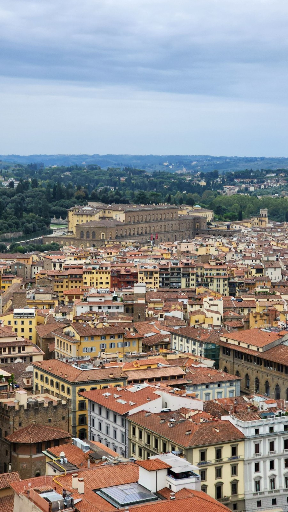

Рим
Колізей та Римський форум нагадують про античну історію.
Рим відомий Колізеєм, Венеція — каналами, Флоренція — мистецтвом Відродження, Мілан — собором Дуомо.

Колізей та Римський форум нагадують про античну історію.
Місто відоме каналами, мостами та площею Сан-Марко.
Собор Санта-Марія-дель-Фйоре та галерея Уффіці пов’язані з мистецтвом Відродження.
Собор Дуомо є одним із найвідоміших символів міста.
Почніть з Рима, продовжіть подорож до Флоренції, Венеції та Мілана. Кожне місто має власний характер і культурні традиції.